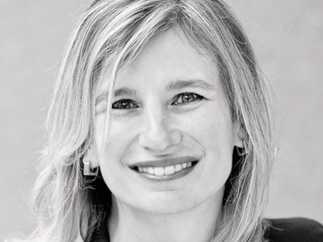
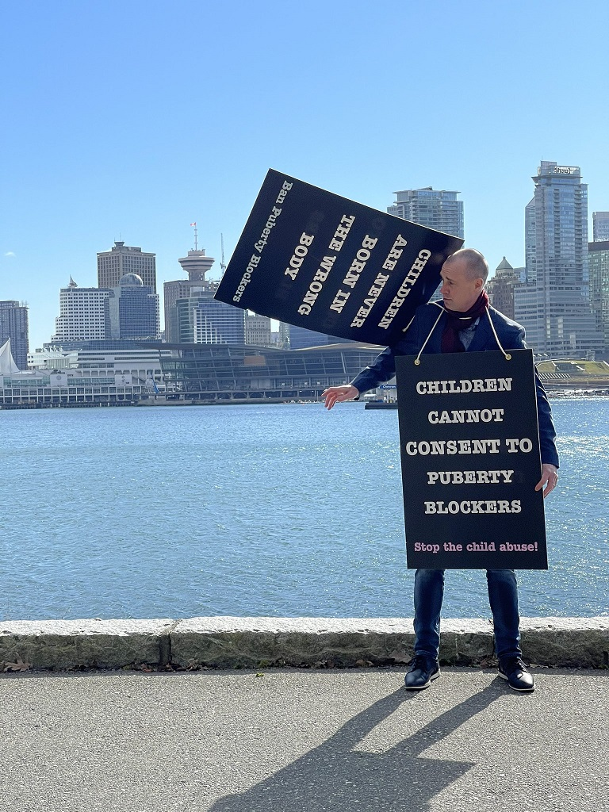
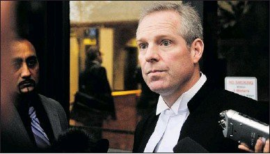
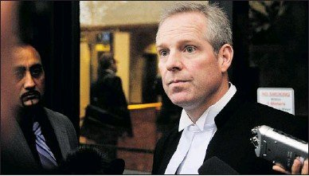
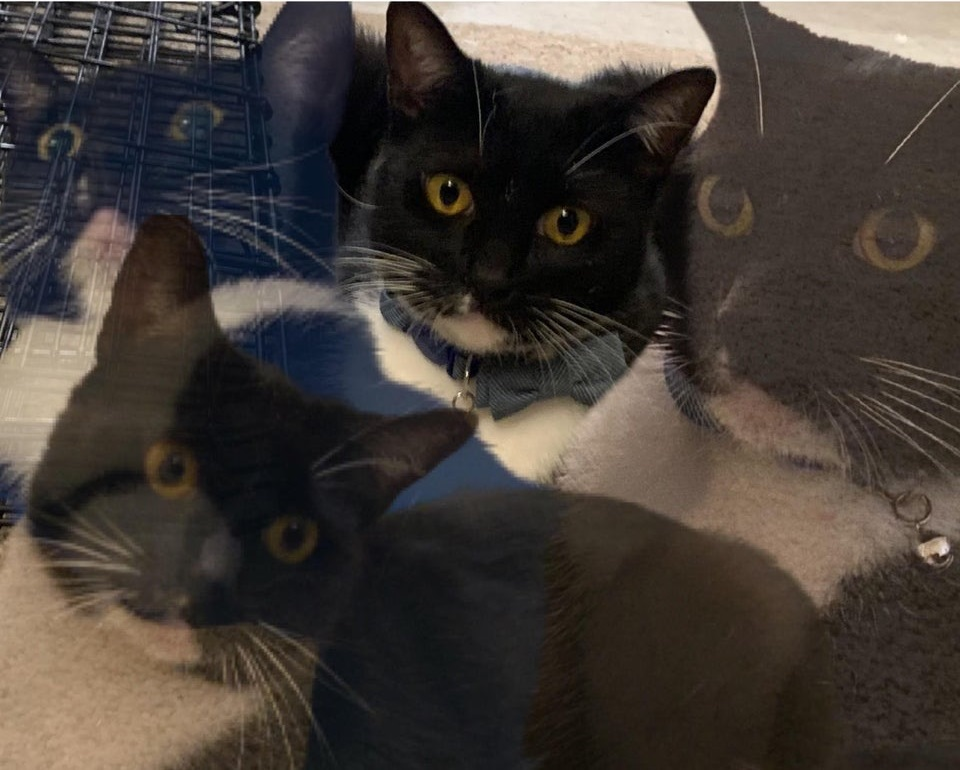
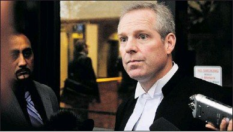

He Who Must NOT BE NAMED Trial - My Personal Experience
May 3rd, 2021
Before I get into this, AB is the child being abused/"transitioned". CD is the child's father, and the one on trial here. EF is the child's mother. GH is probaply Brendan Hirsch, the phrenologist administering the poison to the child, and IJ is probably Wallace Wong, the HIV positive psychologist. The latter two aren't particularly important, and their names can be published.
Secondly, this all happened in the middle of April, but I hadn't gotten around to publishing this for very personal reasons, that can't be explained online.
So today I went to the trial of a certain somebody who I can't name. No really, I legally can't give you his name here because the court has ordered that publication of his name would be a violation of the privacy of his child. A child that, I might add, is around 14-15 years old and is being mutilated hormonally through "puberty blockers."
The father, who is called CD by the court, was just sentenced for multiple violations of this publication ban earlier today at a sentencing that I physically attended. Earlier in the week I went on Monday, only to find out that the Monday appearance was nothing more than a rescheduling to Tuesday.
"Justice" Francesca Marzari, an activist feminist who upheld the bullshit publication ban
Before getting into detail here, a few things to note. First, there were a fair amount of cops there, but this didn’t have the feeling of a military style checkdown. I’ve faced more invasive security at the airport. They basically just asked me if I had COVID. Maybe that’s nothing worth remarking, but I swear to god some people on the internet want to pretend that if you so much as show up to a courthouse Mossad is going to assassinate you or the cops are going to throw you in jail.
Secondly, the court refers to the child as AB, the father as CD, and the mother as EF. They also later will refer to a phrenologist as GH, and a psychologist as IJ. I can tell you who all these people are, just not publicly. Just remember, AB is child, CD is father. I moved this to the top of the page for easy reference. You might find it useful, but the most important to remember is AB = Child, CD = Father.
Thirdly, these people are child abusers. The purpose of the ban on publishing the information of all involved is to protect child abusers. But they’re doing that thing where they scream in pain as they lash at you. I think we all get it, but it needs to be said strongly, there is no actual legitimate purpose for the gag order put on the publishing of information here, especially not for the “doctors” responsible. This is purely politically motivated.
Brenden Hirsch, the phrenologist. Just look at his face.
Anyway, on Monday I had some kerfuffle where I went to the courthouse just across the street, and ended up being late for a meaningless re-schedule appearance. It really didn’t matter. On Tuesday, I was told that the room was completely full, and that I wasn't the media, who had priority. I didn't want to explain to them that I am in fact BC Goy News, since I probably wouldn't be accredited anyway.
They made an overflow room in what was an unused restaurant, about the size of a dance studio with multiple tv’s and chairs set up, and we went there. We being me and some middle aged Asian lady who was there because she was as outraged as everyone else about this case.
Anyway, we go up there at 10 AM for the appearance, getting there on time like rookies. Of course, the appearance did not start on time. What we were instead treated to was multiple minutes of this one lawyer, who we found out later was Crown Counsel Daniel J. Pruim, shuffling papers around. Considering the mic was there, this was possibly the loudest I have ever heard paper. Loud enough that me and the older woman next to me almost started covering our ears. That doesn’t have anything to do with anything, but it’s just one of those little oddities.
Everyone who wasn’t a NOOB like us showed up about 10-20 minutes later into this room, which included some names I was familiar with, such as Laura Lynn-Tyle Thompson, Bill Neufeld, Kari Simpson, and Chris Elston. They clearly knew that courts have contempt for the idea of promptness, and they were correct. All in all, there were about 10 people who showed up in the overflow room, and after talking to six of them afterwards, I can assure you they were all very sympathetic to CD overall, some legal strategy differences aside, as well as the child, AB.

Laura Lynn Tyler-Thompson, one of the good ones.
20 minutes in and Carey Linde, CDs defense counsel appears. About 5 minutes later the judge shows up, and we start at about 10:25. The judge is Michael Tammen, who seems halfway between an actual normal White man and some antifa member, to give you the shortened version. The case is CD violating the publication ban.
CD immediately pleads guilty, yet this case somehow takes four more days to resolve. Fast forward to Friday and I still don’t see any valid reason for this, other than to humiliate CD. Still, there were a few issues that did come up. CD was seeking a conditional discharge. Linde requests he be allowed to tell the judge directly what his thinking was. This is granted. Frankly there’s a few other unimportant little odds and ends.
One thing to note, the prosecution, or “crown counsel,” Daniel J. Pruim keeps referring to the judge as “your lordship,” and sucking up to him in various ways constantly. It’s getting irritating how much he’s this obsequious little twirp, and this gets a whole lot worse with an incident I’m involved in on Friday. In contrast, Linde just refers to the judge as a judge.
Like, at one point, Pruin gets up again and claims that there isn’t a reason to allow defence cross examination for some minor point. He goes on and on about “not that I mean to say this isn’t your decision your lordship blah blah.” Guy might as well be saying “your highness,” from his knees.
At one point I misheard Pruim, and thought he was seeking 14 months in jail! In reality, it was 45 days in jail, and 14 months of “suspension.” It’s sort of unclear to me what this is, but it’s not jail time.
Pruim is yammering on about videos on some USB. Apparently the videos on the USB are the offending videos. The judge got this last night, and hasn’t seen anything on them. The issue is whether Hoogland made a good faith effort to scrub his name off any videos. So he’s initially guilty of putting this information out there.
To clarify this for you. Hoogland violated a publication ban on certain crucial information by giving interviews with various outlets. Laura Lynn Tyler-Thompson, Frank Vaugh, Erin Brewer, Mass Resistance, and many others. This is the specific way that he violated the bullshit, but very real, publication ban. I’m not going to bore you with the details of the specific websites, etcetera. What I will tell you to do is to go and google “mass resistance child case british columbia” if you want just one example. I’d highly recommend that.
Around 11:00 it starts getting moderately spicy. The Judge, Michael Tammen, starts outright interrupting the prosecution multiple times. Initially I thought he was a bit mad that the prosecution is being way too aggressive WRT publication ban. This surprised me, and it turns out I was wrong. Basically, the shitlib judge just wanted to performatively get angry at CD by being so mad that he has to rudely interrupt the prosecution multiple times with his “how absolutely dare you,” routine.

"Justice" Michael Tammen
As soon as it begins, it’s over. Before 11:30, they are taking a break. I stepped outside with the others to do a little bit of networking. I met some very interesting people.
Chris Elston, great goy
First, there’s Chris Elston, who I wrote multiple articles on. The goy who travels across the country with the “children cannot consent to puberty blockers,” sign. Great goy, truly the best. Kari Simpson, she’s been great on all fronts. But I met two other people who I’d never heard of before, both of whom were quite informative.
The first was Heather Leung. She got into all this ten years ago when she was incensed by the Pervertism, my word not hers, in the BC schools new “anti-bullying curriculum.” Honestly I’ll write up an article on this, but you can imagine exactly what this is. Anyway, Heather ran for office for the Conservative Party of Canada in the federal election. She was then smeared as supporting conversion therapy (which is fine BTW, but in her case not true), and kicked out of the Conservative Party of Canada. I repeat, kicked out of the party, which is very common nowadays in Canada, as we saw just a few months ago with the Derek Sloan removal. I also covered not one, not two, but three separate incidents of this with the BC Liberals in the provincial election here in BC in November. Anyway, Heather is Asian, which really goes to show how universally unpopular Pervertism really is amongst all normal people of all races.

Heather Leung
BTW I'm going to be writing up a story on Heather. She's great. Outright calls these Perverts, "people who live a perverted lifestyle." And has been preditably dropped by the Cuckservative Party. I guess they're not really that into the whole "multi racial working class."
I also met a nice lady named Anna. She explained to me that her daughter was also going through the same horseshit. Or rather, her daughter was being abused by the exact same people, and she had been fighting to ensure that her daughter wasn’t put on hormones. In fact, she is currently suing her childs “healthcare provider,” to use the term quite generously, Dr. Andrea Szewchuk. She’s managed to block her daughter's mastectomy, which is where the tits are sliced off, just so you know. Also involved is one Daniel McKee, the surgeon, and I have to say, I get massive creepy gay face vibes from this faggot. “Andrea” Szewchuk is also just a dude, from the picture I saw.
The Surgeon Daniel McKee. He mutilates children.
The father of the child and Anna were split apart, which is a common thread here. These disgusting faggots prey upon children who come from broken homes, because the fewer adults around to give supervision, the easier they can exploit and abuse the children. It is not a surprise that Wallace Wong, one of the main faggots involved here, is in charge of the foster care system here in BC. They want access to children who are either orphaned, or have parents going through divorces or other issues, so they can come in and abuse the children with less pushback.

"Andrea" Szewchuk on the left, I found a picture after all.
Anna had a bit of a weird accent, and looked vaguely Asian or something. Honestly I guessed that she was Metis, which would explain the look as well as possibly a French accent. So when I asked her where she was from she explained that she was born in Russia, which explained the moderately Asian facial features. But then she spent a few years in the 90s in a small little country before coming to Canada. That country was… Israel.
 Honestly, in this case I don’t really think this matters. Everyone is opposed to child abuse, and it’s not like the ADL isn’t willing to sacrifice the occasional jew child on the altar of Pervertism if they can get their strategic goals. After all, soldiers die in wars. Anna is very genuine, and her story is 100% verified through talking to other people. I just thought it was an interesting detail.
——————————————————
Day 2. Really day 4. This is Friday.
I arrived at 10:45 for the 11 AM appearance. I don’t know what I missed, although I can probably figure this out by talking to the goys in the overflow. This time around they actually gave us a huge courtroom, relatively speaking, so I didn’t need to go to the overflow, but there are lots of people there as well. I couldn't take any pictures of this, sorry goyim.
As of about 10:55 we were let in. There were about 7 people in the audience, including myself. The prosecuting lawyer, Pruim, is here, along with some Asian lady who I found out later was some court helper.
As an odd little aside, I remember becoming moderately self-conscious of my typing volume. It was a very large courtroom, but very quiet.
Then some tranny showed up. He’s a 6’1 “woman”. Actually this guy is one of those trannies who are so narcissistic that they are doing the whole anti-tranny bit. There’s one like this in America, I think it’s Blair White. Same energy. It’s amazing, but whatever.
There was a little kerfuffle with some Toronto Star Shitbag named Douglas Quan who released some information. The child’s “victim statement,” specifically. He got somewhat heckled by the audience for this. Even the tranny is doing some of the heckling. I guess everybody gets one.
Honestly, in this case I don’t really think this matters. Everyone is opposed to child abuse, and it’s not like the ADL isn’t willing to sacrifice the occasional jew child on the altar of Pervertism if they can get their strategic goals. After all, soldiers die in wars. Anna is very genuine, and her story is 100% verified through talking to other people. I just thought it was an interesting detail.
——————————————————
Day 2. Really day 4. This is Friday.
I arrived at 10:45 for the 11 AM appearance. I don’t know what I missed, although I can probably figure this out by talking to the goys in the overflow. This time around they actually gave us a huge courtroom, relatively speaking, so I didn’t need to go to the overflow, but there are lots of people there as well. I couldn't take any pictures of this, sorry goyim.
As of about 10:55 we were let in. There were about 7 people in the audience, including myself. The prosecuting lawyer, Pruim, is here, along with some Asian lady who I found out later was some court helper.
As an odd little aside, I remember becoming moderately self-conscious of my typing volume. It was a very large courtroom, but very quiet.
Then some tranny showed up. He’s a 6’1 “woman”. Actually this guy is one of those trannies who are so narcissistic that they are doing the whole anti-tranny bit. There’s one like this in America, I think it’s Blair White. Same energy. It’s amazing, but whatever.
There was a little kerfuffle with some Toronto Star Shitbag named Douglas Quan who released some information. The child’s “victim statement,” specifically. He got somewhat heckled by the audience for this. Even the tranny is doing some of the heckling. I guess everybody gets one.
Toronto Star/National Post Propagandist Douglas Quan
At 11:02 Carey Linde, defence lawyer walks in. This guy seems nice, but doesn’t 100% fill me with confidence. I learnt somewhere that he’s doing all this for free, and while I commend him totally, honestly he’s just not that great of a lawyer. Not exactly a
Pruim makes a big deal of letting us peons understand that WE ARE NOT TO BE LIVE TWEETING DURING THIS unless we are “accredited media.” Basically approved propaganda outlets, such as the Toronto Star. This guy is a slimy little rat.
11:05. CD, the father, gets let out of some back room, and walks in. He’s wearing all red, but it doesn’t seem like prison garb, at least not the stereotypical stuff. I’d like to remind everyone that CD already plead guilty on the very first day. This entire thing is halfway between show trial and real justice.
A few minutes later, I started talking to Quan, the Toronto Star Propagandist. He’s not responding so I’m not sure that he’s heard me. So I ask for him again. Then the little shit Crown Lawyer Pruim says “we might be having an incident," to the two cops present. So the two cops start badgering me and claiming that I’m being too aggressive. They tell me that I can talk with Quan out of the court. They also say “if he doesn’t want to respond, he doesn’t have to.” I make sure to clarify that I wasn't being aggressive. Sadly I'm not allowed to film this encounter.
11:12. Finally the judge appears. Starts with Carey Linde’s statement. Linde starts by kissing the ass of the judge, Tammen. It’s sort of gross but you gotta do what you gotta do. The first few minutes they’re still going on about weird details. It feels a little bit like the calm before the storm.

Carey Linde, CD's lawyer. Good guy, questionable lawyer.
At one point I thought Quan might be getting into a little bit of trouble here, since his publication might have given too much info. NVM, that was too much to hope for, because he’s on Team Child Abuse. Apparently it’s already been decided that “The Toronto star received that in proper standing.” So it’s totally fine for Team Child Abuse to release victim information, just not Team Against Child Abuse. Imagine that, me thinking that a Propagandist for Team Child Abuse might suffer consequences from anyone other than us.
 At one point early on, the judge talks over Carey Linde after fucking him over. I made note of that because it was so absurdly unprofessional and cuntly.

At one point early on, the judge talks over Carey Linde after fucking him over. I made note of that because it was so absurdly unprofessional and cuntly.
Judge Michael Tammen, again.
Christopher Elston apparently live tweeted the proceedings. Literally no reason to be against this. Pruim appears to be subtly attempting to get Elston in trouble. God this guy is such a cunt. Holy shit I am amazed at this little mutant.
Kari Simpson was apparently also told of this in February. But if you go 1 foot outside the building, you can tweet as much as you want. This is a totally legitimate and not at all arbitrary rule.

The Judge, Michael Tammen, continues to be a cunt, refusing to allow Linde to record the judgement for his purposes. There once again appears to be no valid reason to not allow an audio recording of the proceedings, especially because a transcript will apparently be available sometime later. This is just Tammen on a power trip fucking over the defenders of children.
11:25. Judgement starts.
There’s some confusing details about how CD won’t be indicted for criminal contempt, because this is a civil matter. Don’t get your hopes up, goy, he’s about to get fucked over harder than you think.
The appropriate punishment for CD violating the publication ban was originally considered 45 days in prison, minus time spent in jail already, followed by 14 months probation, whatever that means, and he needs to write letters to all the websites who have not removed the content yet.
However, this judge is flat out venomous towards “CD”. Apparently he considers that 45 days would be insufficient, and “bring the administration of justice into great disrepute.” In other words, he’s going to give CD a harsher penalty than even the Crown was asking for.
The judge gives a little bit of history. For those who don’t know, now retired Justice Gregory Bowden outright said that if CD referred to AB by name, that would be considered “family violence.” Insane rad fem Justice Francesca Marzari continued this policy. Yes, this is insane. Family violence originally refers to actual family violence, not publishing people’s identities.
Apparently the psychologist, probably Wallace Wong, testified that “serious psychological harm” would continue if AB is called a girl. He still has a license to practice “medicine.”
The judge goes over a brief list of all the offending interviews. Frank Vaugh, Laura Lynn Tyler-Thompson, Jen Smith, The Federalist, Erin Brewer. There were a lot of people who violated this bullshit publication ban order. Again, it’s the order that’s bullshit, CD has already pleaded guilty.
Erin Brewer. She's a harsh critic of the Tranny Industrial Complex.
It must be said, this judge just loves to hear himself talk.
It’s important to remember that CD is a hero. He knew damn well that what he was doing was illegal, but he did it anyway, because saving his daughter was worth his freedom. Seeing him shifting around in court while this cunt judge smugly “how dare you, how absolutely dare you,” is absolutely infuriating. And again, keep in mind, he has already pleaded guilty. But no, this judge is going through the whole history over and over again.
For the record, here’s an actual quote from this judge that I managed to write down. This is from this hearing.
“No member of the public can decide when, in what circumstances and which court orders to follow,” Tammen said. “Unless and until successfully appealed, court orders must be obeyed. They are part of the legal fabric of society and, thus, the law. Without the ability to enforce court orders, and if citizens were free to disregard them at will, there would not be democracy but anarchy.”
Just the juxtaposition of this cunt judge sitting in the high chair lecturing a guy about "muh democracy," who was literally a postal worker, because he broke their utterly illegitimate gag orders to keep the people from learning about child abuse. And he’s got this smug “gross violation of the child’s privacy,” bullshit going on. Unbelievable.
It gets worse. The cunt judge talks about going after his GoFundMe page, which raised $52,000 plus. Would not put it past these cunts to take the money away, if they haven’t already done so. Note from the future, why indeed yes, my pessimism was warranted.
Judge goes into more details on CD himself. 47 years old, divorced, two children. Lives alone in Surrey with his dog. Mail worker. Former college hockey player. Conditional discharge assault 2013. Truly this man represents the privileged and powerful.
The Judge then goes on to insinuate that Carey Linde was implying Tammen has a personal beef with CD. This is obviously true, but the cunt judge just pretends to be really offended by this obvious truth for political reasons.
At one point the judge outright says, when defending the obviously political publication bans, “The presence of such bans has not deleteriously affected the right of the public to know the workings of the court.”
Apparently the child’s lawyers released a “victim statement” through the Toronto Star. In that statement, the child’s lawyers wrote for the child “I followed the court orders, I don’t know why my dad didn’t have to.” This fucking cunt judge throws this back into the fathers face. I am amazed at how much I viscerally hate this twerp.
“I expressly deny the notion that he had no intention to not share information that caused harm to AB.” He’s literally trying to save his child from sterilization.
I made a few remarks at this point, and others, that I couldn’t quite believe how long this judge was ranting for. This is about 20 minutes in, and we’ve got about 15 to go.
“It is difficult to conceive of a more aggravating set of facts.” Really mikey? Nothing aggravates Michael Tammen more than a father trying to save his child from sterilization at the hands of Perverts. Nothing gets him more aggravated than this.
Then he sinks to a new low, going on about how CD pleading guilty and expressing remorse will barely if at all affect his judgement. Basically, they made the father grovel for justice and then went “LOL, nope. Fuck you anyway.”
Apparently he believes the appropriate sentence is 6 to 9 months in prison! Keep in mind, normal sentencing would be 45 days, and he has plead guilty. Judge going on and on about how he wasn’t “deterred by the 45 day publication ban,” therefore he’s just arbitrarily giving him an enormous sentence. This is literally the logic that you can use for any crime in all of human history.
“Murder has a punishment of 20 years, but you still murdered someone. Therefore the punishment of 20 years isn’t enough, so 500 years it is.”
“Petty theft has a punishment of 2 months, but you still did petty theft, so how about execution?”
Also keep in mind, that these types of people tend to be the “soft on crime,” types. So if you get murdered by a junkie on the streets of downtown Vancouver, don’t count on Michael Tammen giving them a harsh sentence on your behalf. Good luck with that one, goy.
We’ve finally gotten to the actual sentence, after all that whining. Apparently, he is forced to pay $30,000.00 to the Ronald McDonald’s Children’s Hospital Charity. I did not know that the judiciary was allowed to order people to pay money to charities of opposing counsel’s choice, but after talking to some others, this isn’t that out of the ordinary. Whether this should be allowed is another issue, but at least this part is less shocking to those in the know than myself. And he had in fact received just over 50k from his GoFundMe which used his real name, which is what violated the totally not bullshit publication ban and let the legally fuck him out of that money. Since the money needed to go somewhere, they made him give it to the Ronald McDonald Charity.
NOTE: I will have to see if this charity is supporting child abuse.
My mind has been made up, this is total bullshit. I don’t care if this part is par for the course, it’s still complete and utter horseshit. That money should go back to the people who donated, if CD isn’t allowed to keep it. If you raised money from people illegally, then they should get their money back. This is such unbelievable horseshit.
The other half of the sentence is that he gets around 160 days in jail. That’s 5 months, assuming 30 days per, and ~3.5x as long as what the disgusting rat Pruim even asked for. The judge literally gave him a harsher sentence than the crown was even asking for. And not by a little.
To add insult to injury, at least the judge said that since he had been in jail for 31 days awaiting his judgement, that would be taken off the sentence. However, initially he thought CD had been in jail for 45 days, so the Disgusting Rat Pruim starts doing a “well ackshually he hasn’t been in jail for 45 days yet, only 31, so you can’t take that off for time served.” They go back and forth and try to clarify exactly the time already spent in jail.
Sentence ends up being 134 days in jail now. I might have misheard the original sentence, and they went back and forth for a while, but that’s what it ended up at. Give $30,000.00 of other people’s money to whatever the Perverts want you to, and then go spend 134 more days in jail.
After all this crazy madman tried to save his daughter from sterilization and abuse. I’m sure if we lived in a Democracy, where people could vote on the results of a trial, this is what we would get. 100% for sure.
After the trial was over, I walked out and chatted with a few of the people who showed up. Anna showed up again, with her Russian friend Yulia. Angelina Ireland, of "Delta Auschwitz Society," fame showed up as well. Kari Simpson was there, and we discussed legal strategies.
Apparently, Simpson wanted a different legal strategy, where she had already assembled a team of six lawyers who were going to sue the "healthcare providers," Wallace Wong, Brendan Hirsch, and many others. Instead, CD, who was apparently very hard to deal with, embarked on his own strategy. Honestly, Simpson was fairly pissed at CD because she felt like he had allowed precedent to be set, and she might not be wrong.
Which bring us to the productive question: what are we going to do about this goyim?

Honestly, in this case I don’t really think this matters. Everyone is opposed to child abuse, and it’s not like the ADL isn’t willing to sacrifice the occasional jew child on the altar of Pervertism if they can get their strategic goals. After all, soldiers die in wars. Anna is very genuine, and her story is 100% verified through talking to other people. I just thought it was an interesting detail.
——————————————————
Day 2. Really day 4. This is Friday.
I arrived at 10:45 for the 11 AM appearance. I don’t know what I missed, although I can probably figure this out by talking to the goys in the overflow. This time around they actually gave us a huge courtroom, relatively speaking, so I didn’t need to go to the overflow, but there are lots of people there as well. I couldn't take any pictures of this, sorry goyim.
As of about 10:55 we were let in. There were about 7 people in the audience, including myself. The prosecuting lawyer, Pruim, is here, along with some Asian lady who I found out later was some court helper.
As an odd little aside, I remember becoming moderately self-conscious of my typing volume. It was a very large courtroom, but very quiet.
Then some tranny showed up. He’s a 6’1 “woman”. Actually this guy is one of those trannies who are so narcissistic that they are doing the whole anti-tranny bit. There’s one like this in America, I think it’s Blair White. Same energy. It’s amazing, but whatever.
There was a little kerfuffle with some Toronto Star Shitbag named Douglas Quan who released some information. The child’s “victim statement,” specifically. He got somewhat heckled by the audience for this. Even the tranny is doing some of the heckling. I guess everybody gets one.
At one point early on, the judge talks over Carey Linde after fucking him over. I made note of that because it was so absurdly unprofessional and cuntly.
